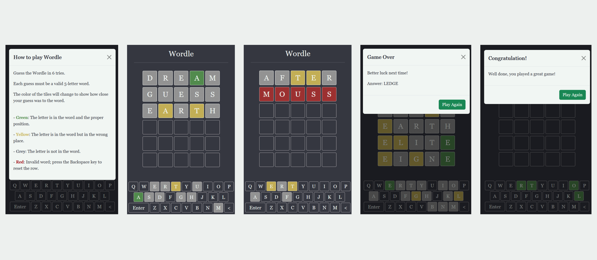

Wordle
Project Overview
Wordle is a word puzzle game that challenges players to guess words based on the frequency of their letters.
I designed and developed a web-based version of Wordle as part of a class project. My goal was to demonstrate my proficiency in web development and put my theoretical understanding into practice.
I utilized JavaScript and Bootstrap techniques to create a responsive design, providing me hands-on experience applying these technologies.
The project offered a valuable opportunity to reinforce my knowledge of JavaScript and responsive design through practical application.
Role UX, UI, Programming
Time3 weeks
Design Process
Develop
My journey as a web developer began with the prototyping phase of my project, where I utilized HTML and CSS to create a solid foundation. HTML allowed me to structure the content of my website, while CSS brought the design to life with its visually appealing styles and elements.
With the foundation set, I went on to enhance the functionality of my project using JavaScript and Bootstrap. These cutting-edge technologies empowered me to add dynamic and interactive features and create a responsive design that provided a seamless user experience on multiple devices.
The combination of HTML, CSS, JavaScript, and Bootstrap allowed me to turn my vision into a reality and complete the build of my project.
VIEW SITE
